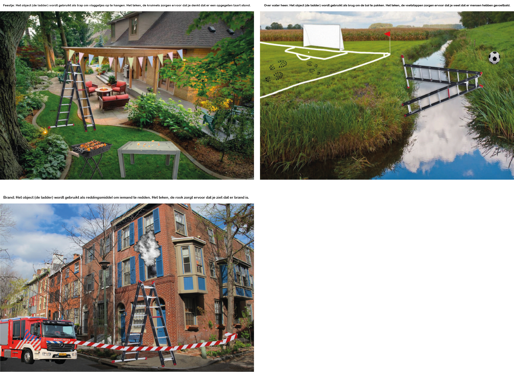
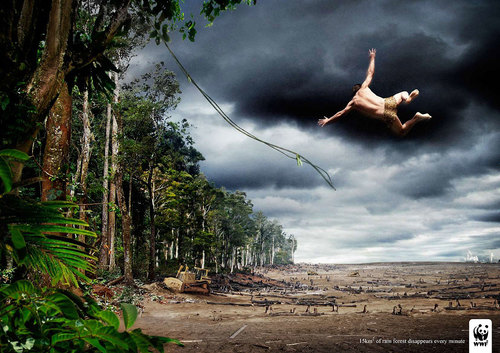
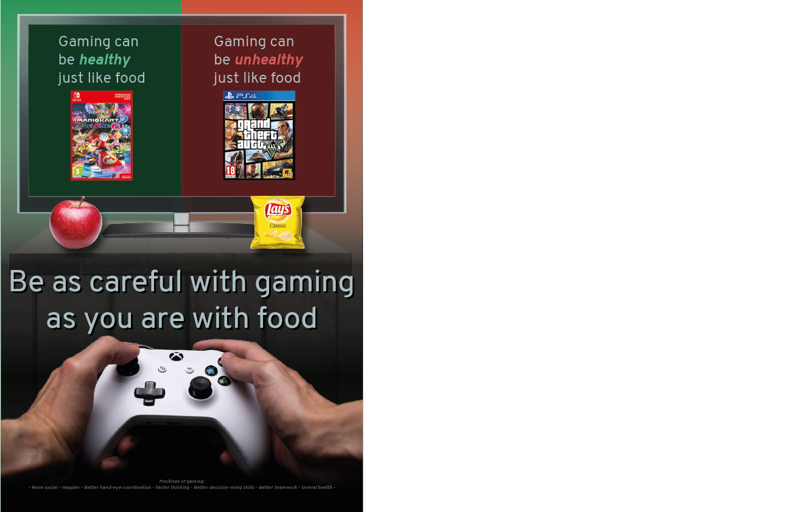

Leerdoel?
De eerste opdracht die we kregen was de volgende opdracht: "Plaats een object in 3 verschillende sferen en contexten en neem een indexicaal teken op om het beeld te versterken". Ik heb een ladder als object gekozen, zoals hier onder is te zien:
Semiotiek:
De tweede opdracht die we kregen was de volgende opdracht: "Zoek een bestaande visual van een bewustwordingscampagne (Sire, Amnesty International, WF, Greenpeace etc.), maak een Retorische analyse en geef ook de indexicale tekens aan. Zoek zelf een manier waarop je je analyse visueel inzichte-lijk maakt". Ik heb gekozen voor de volgende campagne:
Retorica:
De derde opdracht die we kregen was de volgende opdracht: "Maak een ethisch verantwoorde visual/poster voor een bewustwordingscampagne voor een specifieke doelgroep. Pas elementen uit de verschillende theorieën (Semiotiek, Retorica en Gestalt) toe en onderbouw met welk doel je de verschillende elementen gebruikt hebt". Ik heb de volgende campagne gemaakt:
Gestalt:
Ik vond het harstikke leuk om een eigen bewustwordingscampagne te maken en heb veel geleerd van de verschillende principes. Ik wil Annett Huijbregts bedanken voor de interessante lessen!
8,0